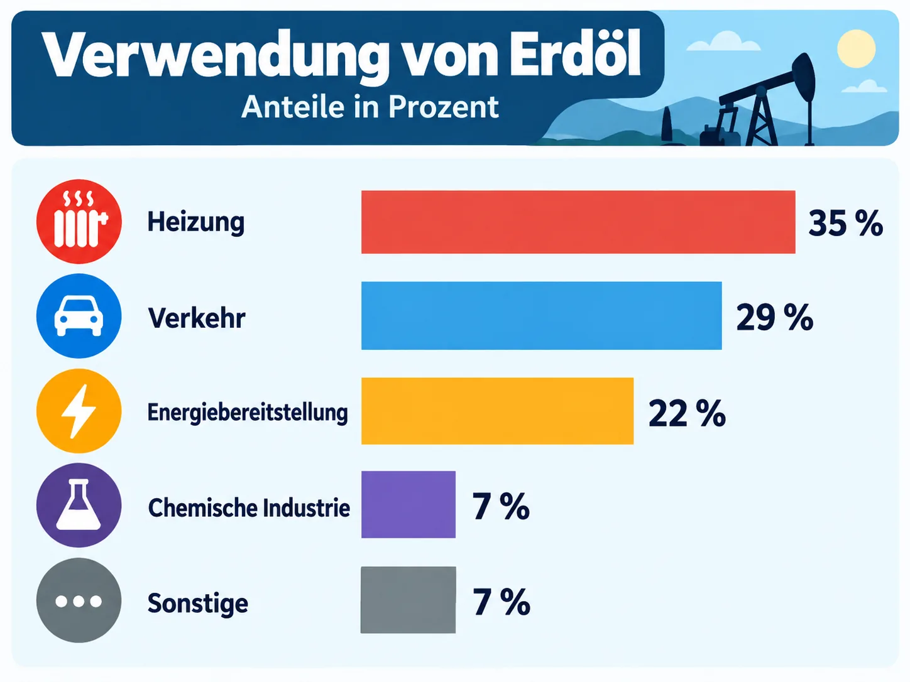

Erdöl steckt fast überall
Mehr als nur Benzin. Bei denken viele zuerst an die Tankstelle. Tatsächlich steckt Erdöl in viel mehr Dingen: In der wird es in getrennt, und aus diesen entstehen Kraftstoffe, Heizöl, Straßenbelag und Grundstoffe für die Chemie.
Aus den Grundstoffen stellt die chemische Industrie , Kunstfasern für Kleidung, Farben und Lacke, Wasch- und Reinigungsmittel, Kosmetik und sogar Medikamente her.
Ein Rohstoff mit Geschichte. Seit etwa 160 Jahren wird Erdöl in großen Mengen gefördert. Es hat Autos, Flugzeuge, günstige Kunststoffe und warme Wohnungen möglich gemacht und damit unseren stark geprägt.
Gleichzeitig ist Erdöl ein : Es ist vor sehr langer Zeit entstanden und wächst nicht nach. Genau darüber wird heute heftig gestritten.
Wo steckt Erdöl drin?
Tippe alle Dinge an, in denen Erdöl steckt (als Rohstoff oder Kraftstoff). Dann tippe auf Auflösen.
![Infografik Was aus Erdöl hergestellt wird. Erdöl ist ein wichtiger Rohstoff für viele Alltagsprodukte. Verkehr und Bau: Kraftstoffe Benzin und Diesel für Autos und Lkw, Straßenbelag aus Bitumen und Teer. Haushalt und Gesundheit: kosmetische Produkte wie Cremes und Make-up, Medikamente, Wasch- und Reinigungsmittel, Mittel gegen Schädlinge. Materialien und Produkte: Gummiartikel wie Reifen und Gummistiefel, Farben und Lacke, Spielzeug aus Kunststoff, Kleidung aus Kunstfasern wie Polyester und Nylon, Dämmstoffe für Häuser.](assets/modul6/produkte-aus-erdoel.webp)
KI-Grafik: Fachinhalt anhand einer vorhandenen Unterrichtsquelle geprüft, Grafik anschließend vollständig neu und eigenständig mittels KI erstellt.
Welcher Bereich?
Tippe ein Produkt an und dann den passenden Bereich.
Wofür wird Erdöl gebraucht?
Das meiste geht in Flammen auf. In Deutschland wird der allergrößte Teil des Erdöls verbrannt: Heizöl wärmt Wohnungen, Benzin, Diesel und Kerosin treiben Autos, Lkw, Schiffe und Flugzeuge an, und in Kraftwerken und Fabriken wird aus Erdöl Energie gewonnen.
Diese Art der Nutzung nennt man . Danach ist der Rohstoff verschwunden, übrig bleiben vor allem und Wasserdampf.
Ein kleiner, aber wertvoller Rest. Nur ein kleiner Teil, etwa 7 von 100 Litern, geht an die chemische Industrie. Sie macht daraus Kunststoffe, Kunstfasern, Farben, Arzneimittel und vieles mehr. Das nennt man .
Der Rohstoff steckt danach im Produkt. Wird das Produkt am Ende , kann er sogar ein zweites Mal genutzt werden.
Tippe auf einen Bereich. Die passenden Fässer leuchten auf.

KI-Grafik: Fachinhalt anhand einer vorhandenen Unterrichtsquelle geprüft, Grafik anschließend vollständig neu und eigenständig mittels KI erstellt.
MERKE
- Der größte Teil des Erdöls wird verbrannt: für Heizung (etwa 35 %), Verkehr (etwa 29 %) und Energiegewinnung (etwa 22 %).
- Nur etwa 7 % nutzt die chemische Industrie als Rohstoff, z. B. für Kunststoffe, Kunstfasern, Farben und Medikamente.
- Beim Verbrennen ist der Rohstoff verloren und es entsteht CO₂. In Produkten bleibt er erhalten und kann recycelt werden.
Wohin fließt das Erdöl?
Tippe zuerst auf eine Lücke, dann auf das passende Wort. Zwei Wörter bleiben übrig.
Nachhaltig? Ökologisch? Leider nein.
Langsam entstanden, schnell verbraucht. Erdöl hat sich in vielen Millionen Jahren aus abgestorbenem gebildet. Wir verbrauchen es in wenigen Jahrzehnten. Was weg ist, kommt nicht wieder: Erdöl ist .
wäre ein Rohstoff, von dem wir nur so viel nutzen, wie nachwächst – wie bei Holz aus einem gut gepflegten Wald. Bei Erdöl geht das nicht. Darum ist die Nutzung von Erdöl nicht nachhaltig.
Schaden für die Umwelt. Die fragt, wie Lebewesen und Umwelt zusammenhängen. Aus dieser Sicht ist Erdöl ein Problem: Beim Verbrennen entsteht CO₂, das den verstärkt. Aus 1 Liter Benzin werden etwa 2,3 kg CO₂.
Dazu kommen Kunststoffmüll, der in Flüsse und Meere gelangt und dort Tieren schadet, und Ölunfälle, die Küsten verschmutzen. Sinnvoll ist eine stoffliche Nutzung nur, wenn die Produkte lange halten und wiederverwertet werden, also in einer .
Tippe zuerst auf „Natur“ und schau zu, wie langsam sich der Speicher füllt.
MERKE
- Erdöl ist ein fossiler Rohstoff. Es ist in Millionen Jahren entstanden, wird aber in wenigen Jahrzehnten verbraucht. Es ist endlich, darum ist seine Nutzung nicht nachhaltig.
- Erdöl belastet die Umwelt stark: Beim Verbrennen entsteht CO₂ (Klimawandel), Kunststoffmüll verschmutzt die Meere, Ölunfälle zerstören Lebensräume. Es ist nicht ökologisch.
- Sinnvoller als Verbrennen ist die stoffliche Nutzung mit Recycling (Kreislaufwirtschaft).
Erkläre in eigenen Worten ✨ KI prüft
Schreibe ganze Sätze oder Stichpunkte. Die KI achtet nur auf den Inhalt, nicht auf die Rechtschreibung. Danach kannst du die Musterlösung ansehen.
Der wahre Preis des Erdöls
Billig – aber nur auf den ersten Blick. Die (Wirtschaft) fragt, was etwas kostet und wer es bezahlt. An der Zapfsäule wirkt Erdöl preiswert. Doch im Preis fehlen die : Schäden durch den Klimawandel wie Dürren und Überschwemmungen, Krankheiten durch Abgase, das Aufräumen nach Ölunfällen und Plastikmüll.
Diese Kosten bezahlen alle – später, über Steuern oder in anderen Ländern. Würde man sie in den Preis einrechnen, wäre Erdöl deutlich teurer.
Abhängig von anderen. Erdöl ist auf der Erde sehr ungleich verteilt. Die größten Vorkommen liegen in wenigen Ländern, z. B. im Nahen Osten, in Venezuela, Russland, Kanada und den USA. Deutschland fördert nur sehr wenig selbst und muss fast alles einführen. Dieser macht uns : Steigt der Weltmarktpreis oder liefert ein Land nicht mehr, merken wir das sofort an Heiz- und Spritkosten.
Umgekehrt werden wie Wind und Sonne immer günstiger. Der Staat fördert den Umstieg mit Geld.
Was steckt nicht im Preis? Tippe die versteckten Kosten an.
Die Höhe der Blöcke ist nur zur Veranschaulichung. Genaue Zahlen sind schwer zu berechnen.
Nur etwa 2 bis 3 von 100 Litern Erdöl stammen aus Deutschland. Den Rest bringen Tankschiffe und Pipelines aus anderen Ländern.
MERKE
- Erdölprodukte sind noch preiswert, weil die Umweltkosten nicht im Preis enthalten sind.
- Erdöl ist endlich und ungleich verteilt. Deutschland muss fast alles einführen und ist deshalb abhängig von den Lieferländern.
- Man kann Erdöl aus drei Blickwinkeln beurteilen: Nachhaltigkeit (wächst es nach?), Ökologie (schadet es der Umwelt?) und Ökonomie (was kostet es wirklich?).
Welcher Blickwinkel?
Tippe eine Aussage an und dann den passenden Blickwinkel.
Der Weg des Erdöls bis zu dir
Bring die Schritte in die richtige Reihenfolge (mit ▲ und ▼).
Training für die Probe
Löse das Kreuzworträtsel
Tippe in ein Kästchen und schreibe. Tippst du ein Kästchen zweimal an, wechselt die Richtung. Ä und Ö bekommen ein eigenes Kästchen.
Kreuze an
Erkläre in eigenen Worten ✨ KI prüft
Schreibe ganze Sätze oder Stichpunkte. Die KI achtet nur auf den Inhalt, nicht auf die Rechtschreibung. Danach kannst du die Musterlösung ansehen.
Erdöl-Profi-Check
Wortspeicher
Alle Fachbegriffe dieses Moduls auf einen Blick.
Geschafft!
Jetzt weißt du, wofür Erdöl gebraucht wird und was es wirklich kostet. In Modul 7 geht es weiter: Was kann Erdöl ersetzen – und sollen wir möglichst schnell ohne Erdöl auskommen? Dort diskutierst du in einer Rolle mit der KI oder mit deinem Tisch.